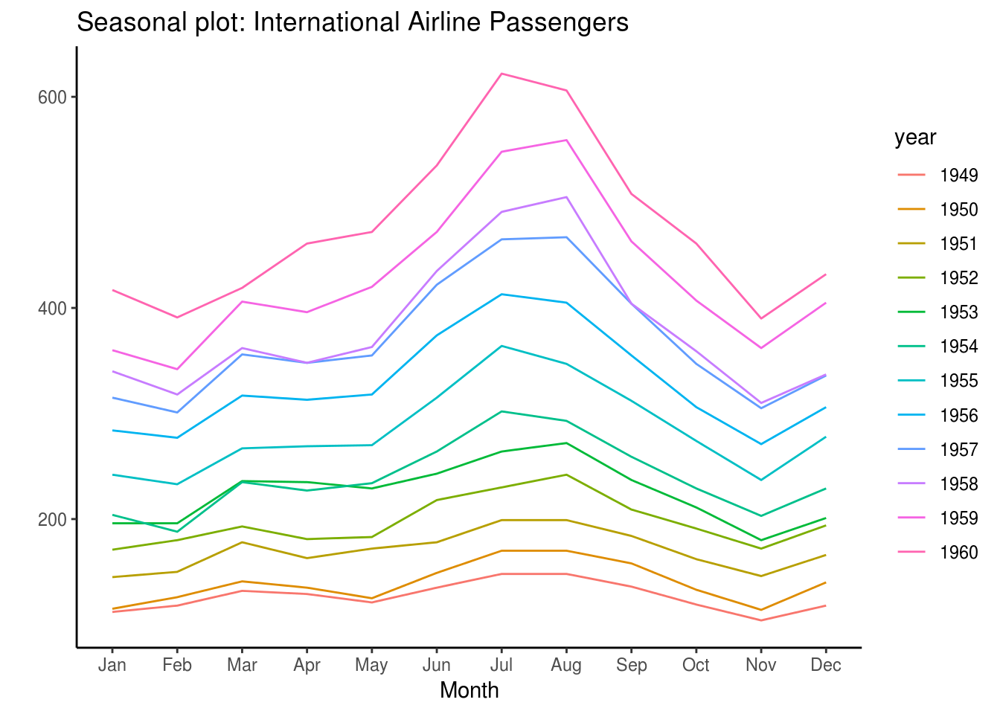
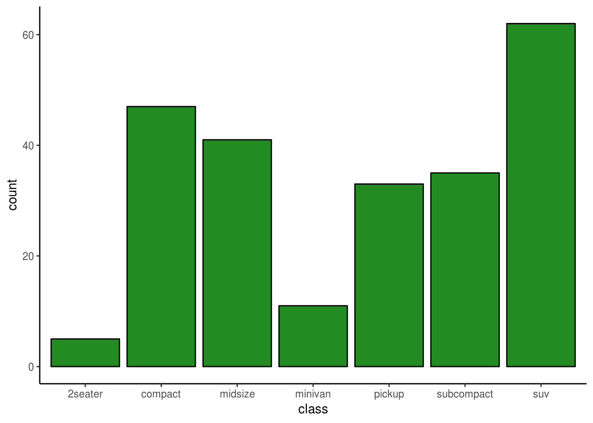
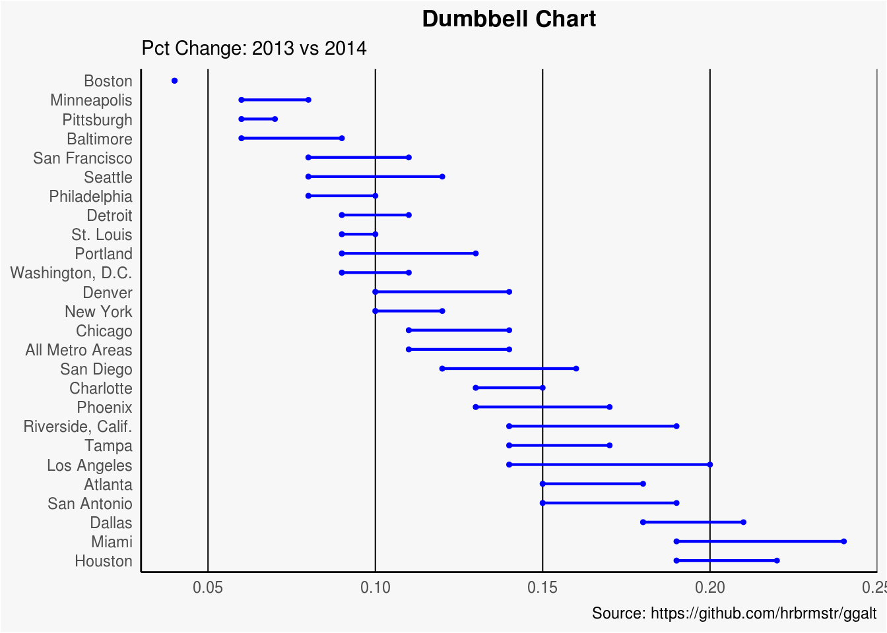
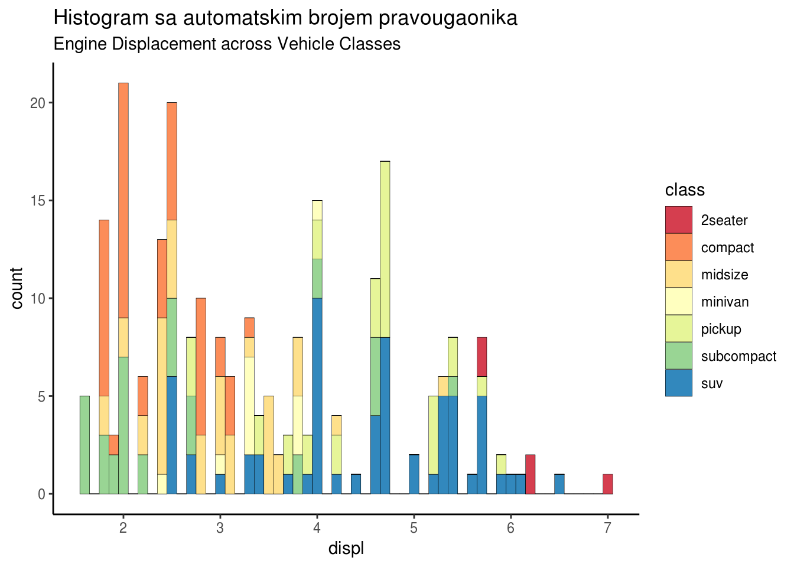
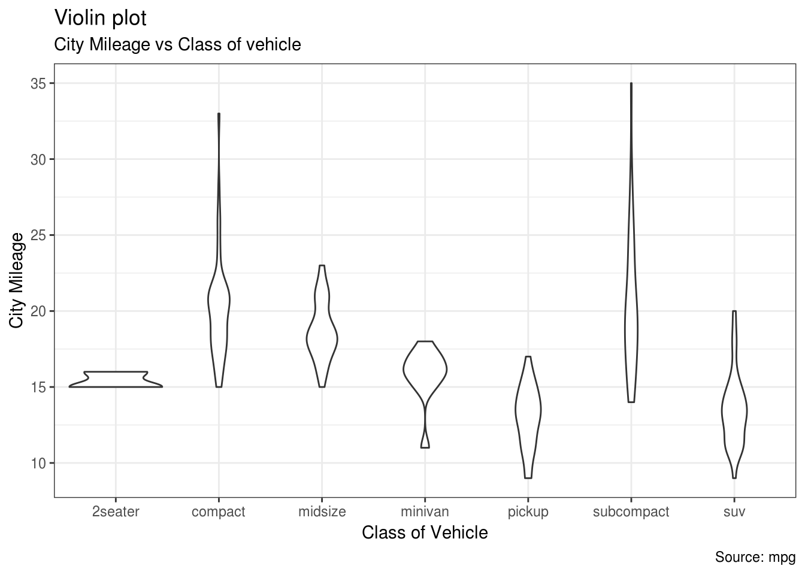
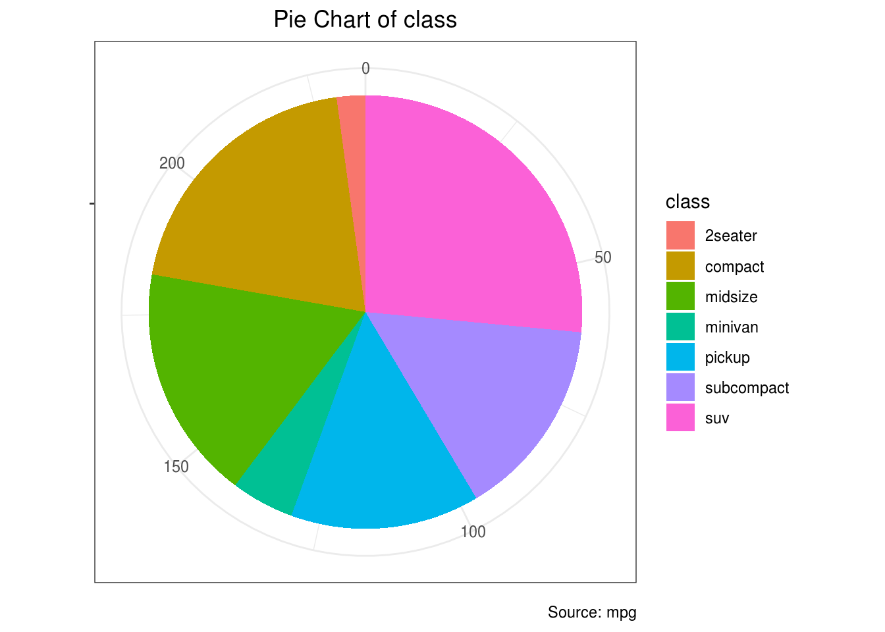
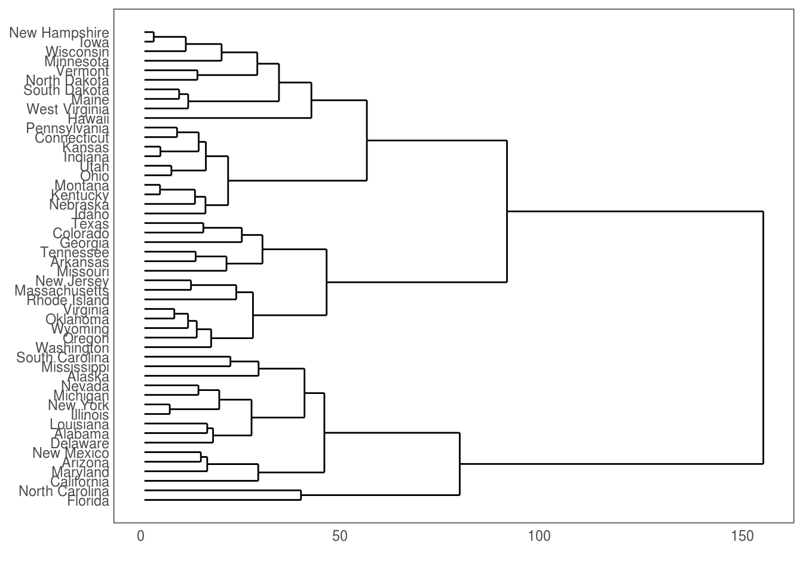

2 Galerija grafika
U nastavku je dat seminarski rad iz Statističkog softvera 1, pod naslovom “Paketi za grafičko predstavljanje”, čiji su autori koleginice Aida Al-Raghyfi i Nataša Martinović. Zahvaljujemo im na vrlo interesantnim primerima vizuelizacija mogućih paketom ggplot, kao i na prikazu drugih paketa za interaktivne grafike.
Napomena. Radi brzine učitavanja, paketi plotly i highcharter su podeljeni u svoje stranice, koje su dostupne u sadržaju sa leve strane.
Uvod
Grafičko predstavljanje podataka je metod koji prikazuje vrednosti, izveštaje, upoređuje rezultate ili daje predviđanja o toku određenih situacija. To je vizuelni prikaz podataka kroz grafikone.
U ovom radu, bavićemo se paketima: ggplot2, plotly i highcharter.
2.1 Ggplot2
Paket ggplot2 je jedan od najkorisnijih i najzastupljenijih paketa u R-u. Ima dosta različitu sintaksu od sintakse klasičnih grafika, i samim tim zahteva malo više učenja, ali najveća prednost ovog paketa je što se sa malo koda prave estetski bogati grafici.
Paket ggplot2 se zasniva na takozvanoj “gramatici grafike”. Grafici se prave “sabiranjem”, odnosno dodajemo komponentu po komponentu na grafik. Glavni delovi koje grafik ima su:
- Podaci (data): Skup podataka koji se prikazuje
- Geometrijski objekat (geom_*): Tip geometrijskog objekta kojim se prikazuju podaci.
- Estetski parametri (aes()): Estetski atributi koji se mogu dodeliti geometrijskim objektima.
Sada ćemo proći kroz par jednostavnih primera
library(ggplot2)
data("midwest", package = "ggplot2")
midwest <- read.csv("http://goo.gl/G1K41K")
#Za primer koristićemo skup podataka midwest iz paketa ggplot2. Ovo je skup podataka populacije svih okruga od 5 država srednjeg zapada SAD-a.
g<-ggplot(midwest, aes(x=area, y=poptotal)) + geom_point(col="steelblue", size=3) + #funkcija geom_point tačakama predstavlja svaki okrug iz naše tabele
geom_smooth(method="lm", col="firebrick") #funkcija geom_smooth pravi određenu aproksimaciju podataka, u ovom slučaju je to linearni model, ali može biti i nelinearni model, što ćemo videti kasnije
gg + xlim(c(0, 0.1)) + ylim(c(0, 1000000)) #Pošto se tačke većinom nalaze na donjoj polovini, funkcijom xlim/ylim možemo da posmatramo grafik u granicama koje mi odredimo, i na taj način obrišemo tačke van tih granica## Warning: Removed 5 rows containing non-finite values (stat_smooth).## Warning: Removed 5 rows containing missing values (geom_point).g1<-g+coord_cartesian(xlim=c(0, 0.1), ylim=c(0, 1000000)) #Ili funkcijom coord_cartesian() da zumiramo grafik u delu koji nama odgovara
g1 + ggtitle("Area Vs Population", subtitle="From midwest dataset") + xlab("Area") + ylab("Population") #Funkcija za stavljanje naslova i podnaslovagg <- ggplot(midwest, aes(x=area, y=poptotal)) +
geom_point(aes(col=state,size=popdensity)) + #Stavljamo da svaki okrug ima svoju boju u zavisnoti od toga u kojoj državi se nalazi i veličinu u zavisnosti od gustine naseljenosti
geom_smooth(method="loess", col="firebrick", size=2) + #ovde možemo videti nelinearni metod aproksimacije podataka
coord_cartesian(xlim=c(0, 0.1), ylim=c(0, 1000000)) + #ograničavamo gornje i donje vrednosti koordinatnih osa
labs(title="Area Vs Population", subtitle="From midwest dataset", y="Population", x="Area", caption="Midwest Demographics")
plot(gg)#Sada ćemo da izdvojimo i zaokružimo okruge koji imaju između 350000 i 500000 stanovnika i sa površinom izmedju 0.01 i 0.1
library(ggalt)## Registered S3 methods overwritten by 'ggalt':
## method from
## grid.draw.absoluteGrob ggplot2
## grobHeight.absoluteGrob ggplot2
## grobWidth.absoluteGrob ggplot2
## grobX.absoluteGrob ggplot2
## grobY.absoluteGrob ggplot2midwest_select <- midwest[midwest$poptotal > 350000 &
midwest$poptotal <= 500000 &
midwest$area > 0.01 &
midwest$area < 0.1, ]
ggplot(midwest, aes(x=area, y=poptotal)) +
geom_point(aes(col=state, size=popdensity)) +
geom_smooth(method="loess", se=F) +
xlim(c(0, 0.1)) +
ylim(c(0, 500000)) +
geom_encircle(aes(x=area, y=poptotal),
data=midwest_select,
color="red",
size=2,
expand=0.08) +
labs(subtitle="Area Vs Population",
y="Population",
x="Area",
title="Scatterplot + Encircle",
caption="Source: midwest")## Warning: Removed 15 rows containing non-finite values (stat_smooth).## Warning: Removed 15 rows containing missing values (geom_point).#Sada posmatramo skup podataka mpg iz paketa ggplot2, odnosno uzeti su podaci iz Motor Trend US magazina, iz 1974. godine, koji obuhvataju potrošnju goriva i 10 aspekata dizajna automobila i performanse za 32 automobila.
data(mpg, package="ggplot2")
mpg <- read.csv("http://goo.gl/uEeRGu")
g <- ggplot(mpg, aes(x=displ, y=hwy)) +
geom_point() +
geom_smooth(method="lm", se=FALSE) +
theme_bw()
mpg1<-g + facet_wrap( ~ class, nrow=3) + labs(title="hwy vs displ", caption = "Source: mpg", subtitle="Ggplot2 - Faceting - Multiple plots in one figure")
#Funkcija facet_wrap() omogućava predstavljanje jednog grafika pomoću više manjih grafika za kategorije koje mi želimo
#Koristeći nrow biramo broj vrsta u kojima će se nalaziti manji grafici
mpg1mpg2<-g + facet_wrap( ~ class, scales = "free") + labs(title="hwy vs displ", caption = "Source: mpg", subtitle="Ggplot2 - Faceting - Multiple plots in one figure with free scales")
#Dok sa scales="free" program sam odabere
mpg2#U ovom konkretnom primeru, upoređujući dobijene manje grafike zaključujemo da sportski automobili koji imaju velike motore, a malu masu troše manje nego pickup i minivan#Sada prikazujemo estetske promene, kao što su: menjanje boje pozadine, menjanje debljine i boje svih unutrašnjih linija, kao i ivica i x/y-osa
g <- ggplot(mpg, aes(x=displ, y=hwy)) +
geom_point() +
geom_smooth(method="lm", se=FALSE) +
theme_bw()
g + theme(panel.background = element_rect(fill = 'khaki'),
panel.grid.major = element_line(colour = "burlywood", size=1.5),
panel.grid.minor = element_line(colour = "tomato",
size=.25,
linetype = "dashed"),
panel.border = element_blank(),
axis.line.x = element_line(colour = "darkorange",
size=1.5,
lineend = "butt"),
axis.line.y = element_line(colour = "darkorange",
size=1.5)) +
labs(title="Modified Background",
subtitle="How to Change Major and Minor grid, Axis Lines, No Border")#Po želji se mogu menjati i margine grafika
g + theme(plot.background=element_rect(fill="salmon"),
plot.margin = unit(c(2, 2, 1, 1), "cm")) + # gore,desno,dole,levo
labs(title="Modified Background", subtitle="How to Change Plot Margin") Sada ćemo prikazati još neke tipove geometrijskih objekata kojim se prikazuju podaci.
2.1.1 Linijski grafici
Za crtanje vremenski uređenih podataka, poput vremenskih serija, standardni grafici su linijski. To je prosto linija koja prikazuje kretanje neke promenljive kroz vreme.
#Za primer koristićemo skup podataka economics iz paketa ggplot2.
data("economics", package = "ggplot2")
ggplot(economics, aes(x = date, y = psavert)) +
geom_line(color = "darkgreen") +
geom_smooth() +
scale_x_date(date_breaks = "5 years", date_labels = "%b %Y") +
labs(x = "Mesec", y = "Stopa stednje") #Funkcijom scale_x_date možemo da odaberemo na koliko godina ćemo da pratimo promene, u ovom konkretnom slučaju smo stavili 5 (“%b” u formatu označava mesec a “%Y” godinu, pa možemo da menjamo i redosled)## `geom_smooth()` using method = 'loess' and formula 'y ~ x'2.1.2 Stacked area chart
Sličan linijskom grafiku, s tim da je oblast ispod linija obojen. Koristimo ga kada želimo da vidimo kako se kvantitet promenio kroz vreme, kada prikazujemo udeo individualnih komponenata. Treba primetiti jednu bitnu stvar, po default-u svaka geom_area() počinje od y-ose(što je obično 0), ali ako želimo da prikažemo udeo individualnih komponenata, potrebno je da svaka geom_area() bude naslagana jedna na drugu. S toga ćemo u sledećem primeru staviti y=stopastednje+srednjetrajanjenezaposlenosti
library(lubridate)##
## Attaching package: 'lubridate'## The following object is masked from 'package:base':
##
## datetheme_set(theme_bw())
df <- economics[, c("date", "psavert", "uempmed")] #pravimo kolonu sa potrebnim vrednostima
df <- df[lubridate::year(df$date) %in% c(1967:1981), ]
brks <- df$date[seq(1, length(df$date), 12)] #podele za x-osu, na svakih 12 meseci
lbls <- lubridate::year(brks) #oznake koje će biti na x-osi
ggplot(df, aes(x=date)) +
geom_area(aes(y=psavert+uempmed, fill="psavert")) +
geom_area(aes(y=uempmed, fill="uempmed")) +
labs(title="Area Chart of Returns Percentage",
subtitle="From Wide Data format",
caption="Source: Economics",
y="Returns %") +
scale_x_date(labels = lbls, breaks = brks) +
scale_fill_manual(name="",
values = c("psavert"="#00ba38", "uempmed"="#f8766d")) # boja linija
2.1.3 Sezonski grafik
Ako radimo sa vremenskim serijama klase ts ili xts, možemo da vidimo sezonske fluktuacije pomoću sezonskih grafika koristeći forecast::ggseasonplot.
#install.packages("forecast")
library(ggplot2)
library(forecast)## Registered S3 method overwritten by 'xts':
## method from
## as.zoo.xts zoo## Registered S3 method overwritten by 'quantmod':
## method from
## as.zoo.data.frame zoo## Registered S3 methods overwritten by 'forecast':
## method from
## fitted.fracdiff fracdiff
## residuals.fracdiff fracdifftheme_set(theme_classic())
#Uzimamo podatke o sezonskim promenenama broja putnika na međunarodnim letovima, kao i o sezonskim promenama vazdušne temperature u Nottingham Castle-u
nottem_small <- window(nottem, start=c(1920, 1), end=c(1925, 12)) # uzimamo manji vremenski period
#Sezonske promene broja putnika na međunarodnim letovima
ggseasonplot(AirPassengers) + labs(title="Seasonal plot: International Airline Passengers")
#Sezonske promene vazdušne temperature u Nottingham Castle-u
ggseasonplot(nottem_small) + labs(title="Seasonal plot: Air temperatures at Nottingham Castle")2.1.4 Bar plotovi
Bar plotovi nam služe za grafički prikaz kategoričkih promenljivih. Na njima se prikazuje koliko postoji podataka u bazi iz odgovarajuće kategorije.
#Prebrojimo iz baze mpg broj automobila po klasi
ggplot(mpg, aes(x = class)) +
geom_bar(fill = "forestgreen", color = "black")
#Bar plotovi mogu biti i naslagani, da prikazuju više vrednosti za istu kategoriju odjednom.
#Nacrtaćemo bar plot gde se vidi populacija za 1997., 2002. i 2007. godinu izabranih zemalja.
#position = "dodge" nam pomaže da lakše čitamo vrednosti sa grafika, tako što ih stavlja jednu do druge
library(gapminder)
# napravimo kratak spisak država koje ćemo gledati i upoređivati populacije tokom određenih godina
countries <- c( "Turkey", "Argentina", "Australia", "Belgium")
gm <- gapminder[(gapminder$year %in% c(1997, 2002, 2007)) &
(gapminder$country %in% countries), ]
ggplot(gm, aes(x = country, y = pop)) +
geom_col(color = "black", mapping = aes(fill = factor(year)), position = "dodge")2.1.5 Lollipop grafik
U suštini sadrži iste informacije kao bar plot, s tim što ih redukuje u tanke linije, pa samim tim izgledaju lepše i modernije.
library(ggplot2)
theme_set(theme_bw())
ggplot(gm, aes(x = country, y = pop,label=year)) +
geom_point(size=3) +
geom_segment(aes(x=country,
xend=country,
y=0,
yend=pop)) +
labs(title="Lollipop Chart"
) +
theme(axis.text.x = element_text(angle=65, vjust=0.6)) + #udaljenost naziva država od linije x-ose
geom_text(nudge_x = 0.2 ) #udaljenost godina od tačkica2.1.6 Dumbbell plot
Koristimo ga ako želimo da predstavimo rast i opadanje između dve tačke u vremenu i poredimo udaljenost između dve kategorije
#Posmatramo bazu podataka health koja nam daje procente iz 2013. i 2014. za 26 gradova u SAD-u.
##devtools::install_github("hrbrmstr/ggalt")
library(ggplot2)
library(ggalt)
theme_set(theme_classic())
health <- read.csv("https://raw.githubusercontent.com/selva86/datasets/master/health.csv")
health$Area <- factor(health$Area, levels=as.character(health$Area)) #za pravilno uređenje ovih tegića
ggplot(health, aes(x=pct_2013, xend=pct_2014, y=Area, group=Area)) +
geom_dumbbell(
color="blue",
size=0.75,
) +
labs(x=NULL,
y=NULL,
title="Dumbbell Chart",
subtitle="Pct Change: 2013 vs 2014",
caption="Source: https://github.com/hrbrmstr/ggalt") +
theme(plot.title = element_text(hjust=0.5, face="bold"),
plot.background=element_rect(fill="#f7f7f7"),
panel.background=element_rect(fill="#f7f7f7"),
panel.grid.minor=element_blank(),
panel.grid.major.y=element_blank(),
panel.grid.major.x=element_line(),
axis.ticks=element_blank(),
legend.position="top",
panel.border=element_blank())
2.1.7 Histogram
Gruba ocena raspodele uzorka se može vizuelizovati histogramima, gde brojimo koliko elemenata uzorka upada u odgovarajuće kategorije. Koristeći histogram, možemo da kontrolišemo broj pravougaonika, takođe možemo odabrati koliki interval pokriva svaki pravougaonik.
library(ggplot2)
theme_set(theme_classic())
##Ponovo posmatramo automobile, i posmatramo broj vozila određene klase po zapremini motora
g <- ggplot(mpg, aes(displ)) + scale_fill_brewer(palette = "Spectral")
g + geom_histogram(aes(fill=class),
binwidth = .1,
col="black",
size=.1) +
labs(title="Histogram sa automatskim brojem pravougaonika",
subtitle="Engine Displacement across Vehicle Classes") 
g + geom_histogram(aes(fill=class),
bins=5,
col="black",
size=.1) +
labs(title="Histogram sa fiksiranim brojem pravougaonika",
subtitle="Engine Displacement across Vehicle Classes") 2.1.8 Grafik gustine
Grafik gustine predstavlja raspodelu podataka u kontinuiranom intervalu ili vremenskom periodu. To je zapravo verzija histograma koja glatko iscrtava vrednosti kako bi se izbegli grubi prelazi.
library(ggplot2)
theme_set(theme_classic())
#I dalje posmatramo mpg bazu podataka i pravimo grafik gustine gradske kilometraže u odnosu na broj cilindara
#Podešavamo alfa transparentnost i bojimo gustine u odnosu na broj cilindara
g <- ggplot(mpg, aes(cty))
g + geom_density(aes(fill=factor(cyl)), alpha=0.8) +
labs(title="Density plot",
subtitle="City Mileage Grouped by Number of cylinders",
caption="Source: mpg",
x="City Mileage",
fill="# Cylinders")2.1.9 Boks plot
Boks plot predstavlja grafički prikaz 5 sumarnih statistika - minimum, 1. kvartil, medijanu, 3. kvartil i maksimum.
library(ggplot2)
theme_set(theme_classic())
#Stavljanjem varwidth=T podešavamo da debljina boksova bude proporcionalna broju vrednosti koje sadrži
#Posmatramo gradsku kilometražu grupisanu po klasi vozila
g <- ggplot(mpg, aes(class, cty))
g + geom_boxplot(varwidth=T, fill="plum") +
labs(title="Box plot",
subtitle="City Mileage grouped by Class of vehicle",
caption="Source: mpg",
x="Class of Vehicle",
y="City Mileage") 2.1.10 Violinski grafik
Sličan je box plotu, ali pokazuje gustinu unutar grupa. Ne prikazuje toliko informacija kao box plot.
library(ggplot2)
theme_set(theme_bw())
g <- ggplot(mpg, aes(class, cty))
g + geom_violin() +
labs(title="Violin plot",
subtitle="City Mileage vs Class of vehicle",
caption="Source: mpg",
x="Class of Vehicle",
y="City Mileage")
2.1.11 Populaciona piramida
Predstavlja unikatan način predstavljanja koliki procenat populacije spada u određenu kategoriju. Piramida ispod je odličan primer toga koliko korisnika se zadrži na svakoj fazi e-mail marketinške kampanje.
#install.packages("ggthemes")
library(ggplot2)
library(ggthemes)
#baza podataka koju posmatramo
email_campaign_funnel <- read.csv("https://raw.githubusercontent.com/selva86/datasets/master/email_campaign_funnel.csv")
#podele koje će se nalaziti na x-osi i oznake
brks <- seq(-15000000, 15000000, 5000000)
lbls = paste0(as.character(c(seq(15, 0, -5), seq(5, 15, 5))), "m")
ggplot(email_campaign_funnel, aes(x = Stage, y = Users, fill = Gender)) + #x-osa sadrži faze, dok y-osa sadrži broj korisnika, i bojimo naše pravougaonike u odnosu na pol korisnika
geom_bar(stat = "identity", width = .6) + # crtanje pravougaonika
scale_y_continuous(breaks = brks, # podele
labels = lbls) + # oznake
coord_flip() + # zamena osa
labs(title="Email Campaign Funnel") +
theme_tufte() + # Tufte theme iz ggfortify
theme(plot.title = element_text(hjust = .5)) + #podešavanje i centriranje naslova
scale_fill_brewer(palette = "Dark2") #biramo paletu boja za naše pravougaonike2.1.12 Pitica
Pitica (ili kružni dijagram) je kružni statistički grafik koji je podeljen na parčiće. Površina svakog parčića je proporcionalna količini koju predstavlja.
#Sada ćemo piticom da predstavimo odnos broja vozila svih ponudjenih klasa
pie <- ggplot(mpg, aes(x = "", fill = factor(class))) +
geom_bar(width = 1) +
theme(axis.line = element_blank(), #izbacujemo x-osu i y-osu
plot.title = element_text(hjust=0.5)) + #podešavamo i centriramo naslov
labs(fill="class",
x=NULL,
y=NULL,
title="Pie Chart of class",
caption="Source: mpg")
pie + coord_polar(theta = "y")
2.1.13 Hijerarhijski dendrogram
Pomoću njih grupišemo objekte, koji su slični u nekom smislu, u grupe koje se zovu klasteri i zatim pravimo hijerarhijsku vezu.
#U narednom primeru ćemo hijerarhijski predstaviti broj uhapšenih kriminalaca na 100000 ljudi u svim državama SAD-a.
#install.packages("ggdendro")
library(ggplot2)
library(ggdendro)
theme_set(theme_bw())
hc <- hclust(dist(USArrests), "ave") #hijerarhijski klastering, metoda "average"
ggdendrogram(hc, rotate = T, size = 2) 